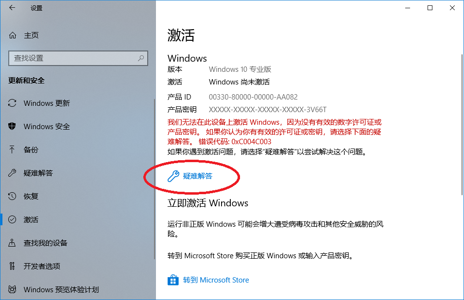
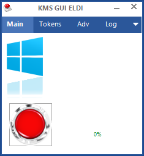
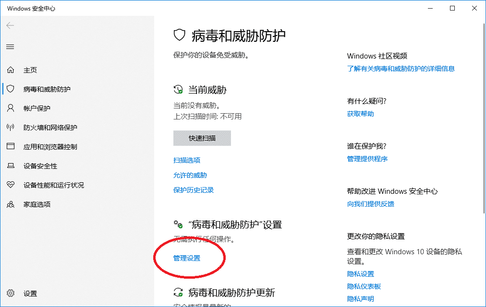

系统免费激活分两种
- 有正版信息，可以简单的永久激活
- 无正版信息，免费不永久激活
有正版信息
一般电脑出厂都会记录了正版系统信息，如果安装的系统版本和刚买电脑时系统版本一样（家庭版、专业版等等），不管重装系统多少次都可以永久激活，而且十分简单。
- 打开设置，可 Win+I 快捷键打开，或者点击开始菜单左下的“设置”
- 点“更新和安全”
- 左侧“激活”
- 点击“疑难解答”，如图
 - 稍等片刻，系统会自动检测，如果你电脑有正版系统信息，则自动激活。如果系统版本不对也有相应提示。
- 如果提示无数字许可证，则尝试下面操作。
下载激活工具
首先要下载一个激活工具 KMSPICO，下载地址：KMSPICO
ZIP 文件可以在 win10/11 中直接打开，所以如果没有压缩软件，直接双击打开然后把文件夹复制出来。或使用其他压缩软件解压
运行并激活
此步有声音，可先静音，防止被吓一跳。。。运行 KMSELDI.exe，如果你的电脑没有显示扩展名，那文件名就是 KMSELDI。如果找不到这个文件就先查看第 4 步。稍等片刻，出现一个小窗口，如下图，点大红点，等待窗口自动消失即激活完成。

关闭 Windows Defender
如果激活完成则结束。如果在第三步找不到 KMSELDI.exe 文件，下载工具后，工具很可能会被 windows defender 拦截，并提示有病毒。所以需要将 windows defennder 关闭才能运行工具。
- Win+I 快捷键或者开始菜单左下角打开设置
- 点击“更新和安全”
- 左侧选择“Windows 安全中心”
- 点击“病毒和威胁防护”
- 点击“管理设置”
 - 关闭实时保护
- 重新解压文件，操作步骤 3
*该教程仅用于测试